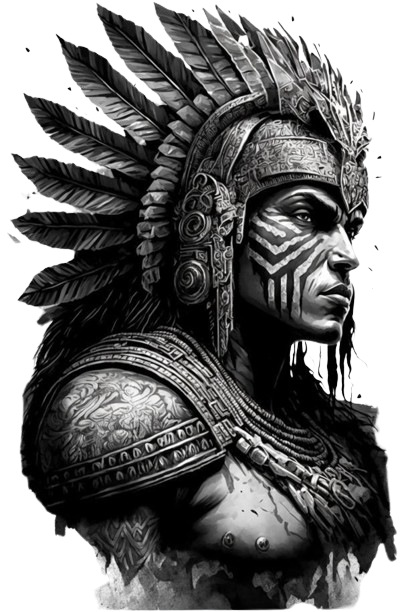
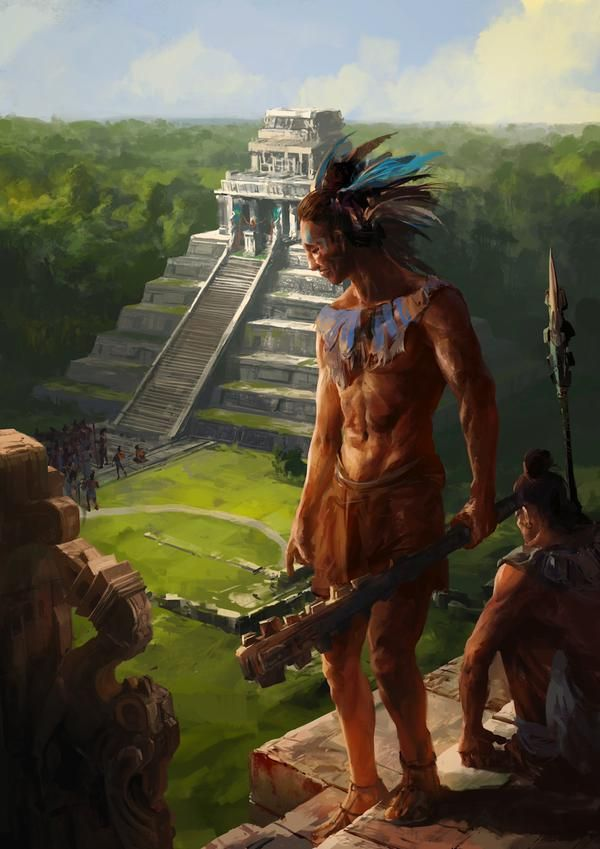

La mitología Maya es el conjunto de creencias, mitos y leyendas que formaban parte de la cosmovisión de la civilización Maya, una de las culturas precolombinas más importantes de Mesoamérica. La mitología Maya estaba profundamente arraigada en la religión, la sociedad y la vida cotidiana de este pueblo antiguo.
Algunos aspectos destacados de la mitología Maya incluyen:
Dioses y Deidades: Los Mayas adoraban a una amplia variedad de dioses y deidades que representaban diferentes aspectos del mundo natural, como el sol, la luna, la lluvia, el maíz y otros fenómenos importantes para su subsistencia y su cultura.
Creación del Mundo: Los Mayas tenían varias versiones de la creación del mundo y del origen de la humanidad. Muchos de estos relatos involucraban a los dioses en actividades divinas, como la creación del universo, la formación de la tierra y la creación de los primeros seres humanos.

El Popol Vuh: Este es uno de los textos mitológicos más importantes de los Mayas. Es una recopilación de mitos y leyendas que incluye relatos sobre la creación del mundo, las hazañas de los dioses y héroes, y las tradiciones culturales y religiosas del pueblo Maya.
Sacrificios y Rituales: Los Mayas realizaban una variedad de rituales y ceremonias religiosas para honrar a sus dioses y buscar su favor. Estos rituales incluían sacrificios humanos y de animales, danzas, ofrendas y otros actos ceremoniales.
Cosmovisión y Relación con la Naturaleza: La mitología Maya reflejaba la profunda conexión de este pueblo con la naturaleza y el cosmos. Creían en la existencia de múltiples niveles de realidad y en la influencia de los dioses en los acontecimientos terrenales, como las cosechas y los fenómenos climáticos.
En resumen, la mitología Maya es una parte integral de su cultura y legado histórico, que ofrece una ventana fascinante hacia las creencias, tradiciones y cosmovisión de esta antigua civilización mesoamericana.